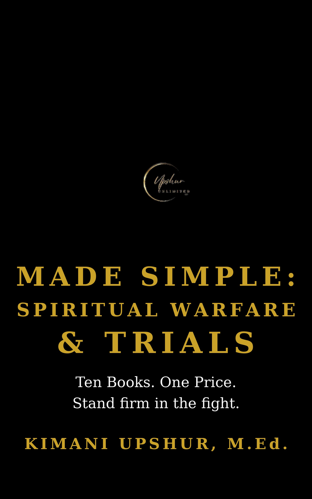

Made Simple: Spiritual Warfare & Trials — The Complete Box Set

Made Simple: Spiritual Warfare & Trials — The Complete Box Set by Kimani Upshur, M.Ed. Ten bestselling Made Simple books. One unbeatable price. Ten books for hard seasons and spiritual battle — warfare, trials, suffering, temptation, and sin — with the armor of God and the victory of Christ. IN THIS BOX SET: 1. Suffering Made Simple — When pain has a purpose — walking with God through hard things. 2. Spiritual Warfare Made Simple — Know your enemy, know your armor, stand your ground. 3. The Occult Made Simple — What Scripture says about the dark arts — and why to stay far away. 4. The Armor of God Made Simple — Dress for battle every morning — Ephesians 6, piece by piece. 5. Refuge Made Simple — Run to God first — your hiding place in every storm. 6. Temptation Made Simple — See it coming, know the way out — victory before the fall. 7. Sin Made Simple — Call it what it is, kill it at the root, walk in freedom. 8. Victory Made Simple — The battle is the Lord's — living from triumph, not for it. 9. Trials Made Simple — Tested faith is stronger faith — finding God in the fire. 10. Vigilance Made Simple — Stay awake, stay sober — alertness as a spiritual discipline. Every Made Simple book is written from a Christian worldview: Scripture first, practical always — honoring the Father, following Jesus Christ as Lord and Savior, and walking in the power of the Holy Spirit. Buy the box set once, and build your library for less than the cost of the books individually.
- Publisher
- Upshur Unlimited, LLC
- Author
- Kimani Upshur, M.Ed.
- Format
- Ebook
- Language
- English